비서-3급 (2013-05-26 기출문제)
1과목: 비서실무
1. 김비서가 사무실에서 사용하는 호칭으로 가장 적절한 것은?
- 대학교 후배에게 동료 직원이 없는 자리에서 “○○야, 요새 힘든 것은 없니?” 라며 이야기를 건넸다.
- 사내 회의에서 동문선배의 제안내용에 “○○형이 제안하신 내용은 고객관점에서 적절한 내용 같습니다.”라고 말했다.
- 부장님의 아들이 경연대회에서 입상한 소식을 듣고는 “자녀분이 수상을 하여 기분 좋으시겠어요.”라고 인사를 건넸다.
- 여자 과장님이 부재중 받은 전화메모를 건네며 “남편 분께서 10분 전에 전화하셨습니다.”라며 말했다.
(정답률: 64%)

2. 상사에 대한 이해를 위하여 비서가 노력하여야 하는 내용으로 잘못 설명된 것은?
- 작성자와 작성일자가 표기된 상사 신상 카드를 주기적으로 점검하고 보완하도록 한다.
- 상사의 조직 내 위치와 역할을 이해하기 위해 조직도 및 선임비서의 정보를 활용한다.
- 인터넷 및 인물자료 검색을 활용하여 상사의 조직 외 위치 및 활동을 파악하도록 한다.
- 상사의 선호 색상, 음악, 기호 식품 등 사적 영역에 속하는 것은 신상 카드 관리에 포함시키지 않는다.
(정답률: 74%)
3. 회의관련 비서업무에 대한 설명으로 올바른 것은?
- 회의 자료 준비 시 자원의 경제적 활용을 고려하여 이면지를 활용한다.
- 회의 종료 후 사용된 메모들은 바로 폐기처분하여 기밀유지를 이행하도록 한다.
- 일단 회의가 시작된 후 비서는 밀린 외부업무를 처리하여 시간 효율성을 높인다.
- 회의 종료 후 회의결과 및 회의록 정리를 신속하게 처리·배부하도록 한다.
(정답률: 83%)
4. 비서의 업무계획에 대한 설명으로 바람직하지 않은 것은?
- 상사의 업무 계획에 따라 비서의 업무 계획을 조정한다.
- 가장 능률적인 시간에 가장 복잡하고 어려운 업무를 처리한다.
- 업무의 우선순위는 비서의 관점에서 볼 때 중요도와 긴급도에 따라 결정된다.
- 업무의 우선순위를 정하여 즉시 마쳐야 하는 업무, 오늘 중으로 마쳐야 하는 업무, 여유 있게 처리할 수 있는 업무 등으로 처리한다.
(정답률: 75%)
5. 서울기획 김민지 비서가 상사의 일정표를 작성하는 방법으로 가장 적절치 않은 것은?
- 대단위 계획에서 소단위 계획으로 상세화 한다.
- 주간 일정표는 금요일까지, 일일 일정표는 전일 퇴근 시간전까지 상사의 확인을 받는다.
- 상사의 모든 일정은 기밀사항이므로 다른 직원과 공유하는 것을 삼간다.
- 일정의 변동을 최소한으로 줄이기 위해 적절한 시간적여유를 두도록 한다.
(정답률: 81%)
6. 다음은 비서의 평상시 근무태도이다. 이 중 가장 바람직한태도는?
- 대중교통을 이용하여 퇴근 중 사무실로부터 거래처 정보를 묻는 전화를 받아 담당자 이름과 소속 등의 정보를알려 주었다.
- 상사로부터 기밀문서를 출력 요청받고 공용 프린터를 이용해 출력 실행 중 급한 전화를 받고 대응하다 보니 출력물 수거에 30분 정도 소요가 되었다.
- 문서 표지에 '대외비'라고 기재되어 있는 문서 작성 후 저장 시 암호를 설정해 두었다.
- 이미 사용된 회의 자료 용지를 이면지로 활용하며 복사지를 절약하고 있다.
(정답률: 74%)
7. 대한상사 정미영 비서가 시간을 효율적으로 관리하기 위하여 취한 행동으로 가장 적절치 않은 것은?
- 업무 처리 방식이 비슷한 업무는 동시에 처리하도록 한다.
- 자잘한 업무를 먼저 처리하여 큰일을 위한 시간을 확보해 둔다.
- E-mail은 답변을 해 줄 수 있을 때 메일 박스를 체크하도록 한다.
- 정기적으로 책상서랍을 정돈하고 자주 사용하는 비품은 손닿기 쉬운 곳에 보관한다.
(정답률: 70%)
8. 다음 중 비서의 직장 내에서의 바람직한 인간관계에 대한 설명 중 옳은 것은?
- 먼저 퇴근을 할 때에는 “수고 하셨습니다.”라고 밝게 인사를 하고 퇴근한다.
- 비서는 가급적 사내 모임의 적극적인 참가를 지양한다.
- 다른 사람들의 고충이나 의견들을 잘 선별하여 상부에 전달함으로써 가교 역할을 한다.
- 상사로부터 꾸중을 듣게 된 경우, 적극적인 변명을 통해 상사와의 신뢰를 회복해야 한다.
(정답률: 75%)
9. 다음 중 비서의 스트레스 관리요령으로 가장 적절하지 않은 것은?
- 업무에 자신감을 가질 수 있도록 전문비서교육과정을 수 강한다.
- 스트레스 관리를 위해 규칙적으로 아침에 조깅을 하고 출근을 한다.
- 업무에 어려움이 있을 때 선배의 조언을 듣는다.
- 상사와 일하는 방식이 다를 경우, 자신의 업무스타일을 상사에게 알려서 갈등이 없도록 한다.
(정답률: 83%)
10. 다음의 한자어가 바르게 짝지어진 것이 아닌 것은?
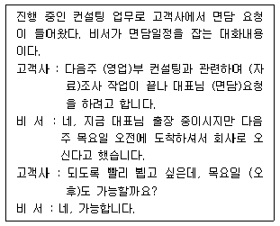
- 영업(營業) - 자료(澬料)
- 면담(面談) - 오후(午後)
- 영업(營業) - 면담(面談)
- 자료(資料) - 오후(午後)
(정답률: 52%)
11. 제품에 불만이 있는 고객이 사장님과 통화하겠다고 전화를 걸어왔다. 고객의 불만을 듣게 된 비서의 응대로 가장 적절한 것은?
- “아, 그러셨군요. 정말 불편하셨겠습니다. 저라도 고객님과 같은 생각이었을 것입니다.”
- “저희가 일부러 그런 것도 아닌데 그건 고객님께서 잘못생각하신 것입니다.”
- “저희 쪽 업무와는 관련이 없는데 이쪽으로 전화하시면 안 됩니다.”
- “네, 알겠습니다. 일단 사장님과 연결해드리겠습니다.”
(정답률: 84%)
12. 한국대학교 개교 50주년 기념 학술대회가 열리고 있는 대회의실 입구에서는 학술대회 참석자의 입장이 한창이다. 접수대에서 진행되는 비서의 업무에 대한 설명으로 가장 적절치 않은 것은?
- 참석을 미처 통보하지 않고 온 인사에게는 입장이 어렵다는 것을 알리고 돌려보낸다.
- 식사여부를 확인해 정확한 인원을 준비 측에 다시 알려준다.
- 등록부에 사인을 받는다.
- 가나다순으로 정리된 참석자 명찰을 찾아 본인에게 전달한다.
(정답률: 75%)
13. 전화통화연결을 지시받고 보니 전화가 끊어져 있었다. 새한은행 김전무실로 전화를 건 강한나 비서가 통화 연결하는 방법을 가장 잘 설명한 것은?
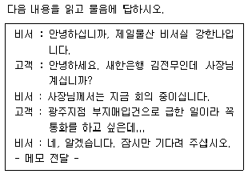
- 전무가 먼저 연결된 상태에서 사장님을 연결한다.
- 사장님이 먼저 연결된 상태에서 전무와 연결한다.
- 동시에 연결할 수 있도록 한다.
- 사장님께 전화번호를 드리고 전화할 수 있도록 한다.
(정답률: 68%)
14. 회의의 형식에 대한 설명으로 맞게 짝지어진 것은?
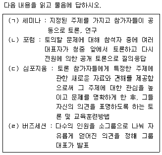
- (ㄱ) - (ㄹ)
- (ㄴ) - (ㄹ)
- (ㄱ) - (ㄷ)
- (ㄷ) - (ㄹ)
(정답률: 66%)
15. 비서업무 중 발생하는 갈등 대처 방안으로 적절치 않은 것은?
- 동료들이 빈번하게 업무를 맡기는 경우 화합을 위해 해주는 것이 바람직하다.
- 타인으로부터 업무에 관련한 비판을 받은 경우 긍정적으로 생각하고 발전할 수 있는 방향으로 노력한다.
- 상사가 도를 벗어나 개인적인 일을 부탁하는 경우는 공사를 분명히 하여 정중히 거절한다.
- 어렵고 복잡한 일이 한꺼번에 몰릴 경우에는 우선순위를 확인하여 차근히 일을 진행하고 효율적으로 시간 관리를 한다.
(정답률: 59%)
16. 서울기획 김현아 비서가 상사의 금융업무를 보좌하는 방법으로 가장 적절치 않은 것은?
- 신용카드 매출전표를 보관해 두었다가 카드회사 명세서의 내역과 대조 및 확인하도록 한다.
- 소액 현금을 관리하기 위하여 금전 출납부에 기입하고 증빙서류는 파일링하여 보관하도록 한다.
- 해외 출장 시 신용카드의 해외사용 한도액을 미리 확인하여 사용에 불편이 없도록 한다.
- 대금 명세서와 매출전표는 은행 예금 구좌에서 계좌이체가 되어 처리된 후 폐기하도록 한다.
(정답률: 71%)
17. 서로 명함을 교환하는 방법으로 가장 적절치 않은 것은?
- 가볍게 인사하고 두 손으로 받되, 손가락으로 명함의 내용을 가리지 않도록 한다.
- 어려운 한자이름은 굳이 묻지 않아도 된다. 성과 직함으로 불러도 무방하다.
- 방문객의 회사명, 성명, 직책을 읽어 확인한다.
- 방문객의 경우 방문한 사람이 먼저 명함을 준다.
(정답률: 78%)
18. 임주은 비서가 모시는 상사는 업무 특성상 외부에서 보내는 일정이 많다. 매일의 일정을 파악하기 용이하게 휴대용 일정표를 만들어서 상사에게 드리려고 한다. 위의 일정표 항목 중 굳이 쓰지 않아도 되는 항목은?
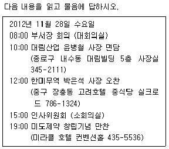
- 방문지의 주소
- 만날 사람의 이름
- 일시
- 일정주제
(정답률: 57%)
19. 상사 출장 중 박 비서의 근무태도로서 가장 바람직한 것은?
- 상사 출장 중 사내 타부서에서 상사의 구체적 일정을 알려달라는 요청에 상사의 일정표를 전달해 주었다.
- 해외 출장 일정이 다소 길어 그동안 사용하지 못하였던 휴가를 일부 사용하였다.
- 그동안 밀렸던 명함정리와 상사 집무실의 서류정리를 해놓았다.
- 상사에게 온 우편물과 전화메모는 일단 상사의 출장 직후 일시에 보고 드리려 한다.
(정답률: 70%)
20. 상사가 먼저 방문한 고객과의 미팅이 약속된 시간을 초과하여, 내방객이 기다리게 될 경우, 비서가 취해야 할 행동으로 가장 적절하지 않은 행동은?
- 미팅중인 상사에게 다른 내방객의 도착을 구두로 알림으로써 상사와 먼저 방문한 고객이 빨리 미팅을 마치도록 유도한다.
- 내방객이 기다리시는 동안 무료하지 않도록 신문이나 시사 잡지 등을 권하고 차를 대접한다.
- 내방객이 비서실에서 대기 중일 경우, 화면 보호기를 작동시킨다.
- 기다리시는 내방객과 대화중에 전화벨이 울리면, 손님에 게 양해를 구하고 전화를 받는다.
(정답률: 76%)
2과목: 사무영어
21. 다음 대화 내용상 빈칸에 들어가기에 적절하지 않은 표현은?
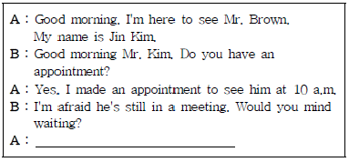
- Should I come back later?
- No, not at all.
- What time would be convenient for you?
- Shall I come back tomorrow?
(정답률: 68%)
22. 다음 대화 내용상 빈칸에 들어갈 가장 적절한 표현은?
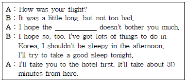
- plane
- baggage
- conference
- jet lag
(정답률: 56%)
23. 다음 대화 내용상 빈칸에 들어갈 가장 적절한 표현은?
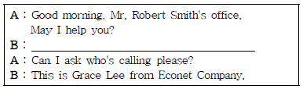
- May I take your message?
- This is Tom Jones ABC Software.
- Just a moment, please.
- Could you put me through to Mr. Smith, please?
(정답률: 66%)
24. 다음 대화 내용상 빈칸에 들어갈 가장 적절한 표현은?
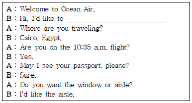
- open an account
- reserve a plane ticket
- apply for a visa
- check in
(정답률: 47%)
25. 다음 대화의 빈칸에 가장 적절한 단어는?
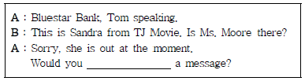
- have
- take
- say
- leave
(정답률: 72%)
26. 다음 대화의 내용상 빈칸에 가장 적절한 문장은?
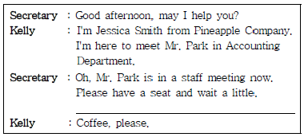
- What do you want to have?
- How do you like your coffee?
- Do you drink coffee so often?
- Would you like something to drink?
(정답률: 72%)
27. 아래의 전화메모의 내용으로 가장 적절한 것은?
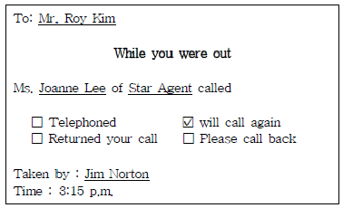
- 다시 전화 드리겠습니다.
- 전화 기다리겠습니다.
- 안부 전화 드렸습니다.
- 전화했다고 전해 주세요.
(정답률: 73%)
28. 미국식으로 Formal business letter의 날짜를 표기 할 때 가장 적절하게 쓰여 진 것은?
- 8/19/2012
- 2012/8/19
- 19 August, 2012
- August 19, 2012
(정답률: 62%)
29. 다음은 Formal Business letter의 본문의 내용을 마치며 회신을 기다린다는 뜻으로 주로 쓰는 표현입니다. 빈칸에 들어갈 가장 적절한 단어는?
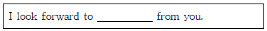
- taking
- hearing
- expecting
- coming
(정답률: 55%)
30. 다음 내용이 설명하는 회사 부서명은?
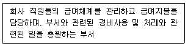
- marketing department
- secretarial department
- accounting department
- R&D department
(정답률: 78%)
31. 다음 빈 칸에 가장 적절한 표현은?
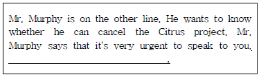
- I didn't recognize his voice.
- I understand why he is calling.
- Can you forward the message?
- Would you like for me to transfer his call?
(정답률: 39%)
32. 아래의 항공일정이 바르게 설명되지 못한 것은?
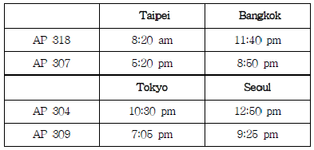
- The arrival time of AP 318 at Bangkok is 11:40 p.m.
- AP 307 leaves Taipei at 5:20 p.m.
- AP 304 gets to Seoul at 12:50 p.m.
- AP 309 leaves for Seoul at 9:25 p.m
(정답률: 59%)
33. 다음 보기 중 위의 Fax내용과 가장 일치하는 것은?(33번 공통지문 문제)
- Mr. John Blake는 Diners Plus 지사 주소를 알고 싶어한다.
- Mr. Peter Ranger는 Diners Plus에서 일하고 있다.
- Diners plus는 Colorado에 위치해 있다.
- 이 Fax는 표지까지 모두 한 장 이다.
(정답률: 74%)
34. 아래 빈칸에 들어갈 가장 적절한 문장은?
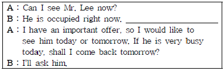
- May I ask what your visit is in regard to?
- Would you please have a seat and wait a moment.
- Mr. Lee is expecting you.
- What's the matter with you?
(정답률: 52%)
35. 다음 편지의 내용과 일치하지 않는 것은?
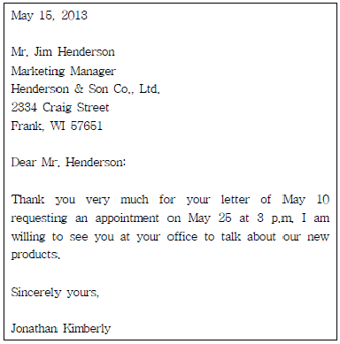
- 발신인은 Kimberly이다.
- Meeting 날짜는 2013년 5월 25일이다.
- 수신인은 Mr. Henderson이다.
- 편지를 쓴 이는 갑작스런 출장 때문에 약속을 지킬 수 없게 되었다.
(정답률: 80%)
36. 다음 영문편지봉투 중 잘못된 부분은?
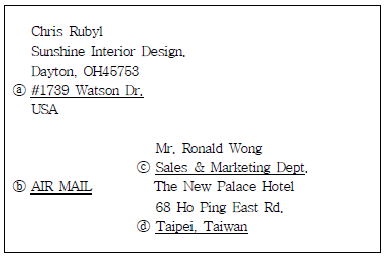
- ⓐ
- ⓑ
- ⓒ
- ⓓ
(정답률: 63%)
37. 다음 대화 중 Mr. Johnson이 오늘 Ms. Thomson을 만나지 못하는 이유로 알맞은 것은?
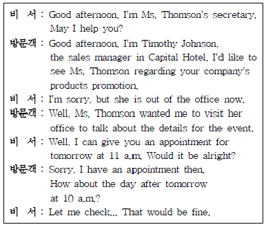
- Ms. Thomson이 회의 중이므로
- Ms. Thomson이 외근 중이므로
- Ms. Thomson이 전화통화 중이므로
- promotion이 취소되었기 때문에
(정답률: 83%)
38. 다음 대화 내용 상 빈 칸에 어울리지 않는 문장은?
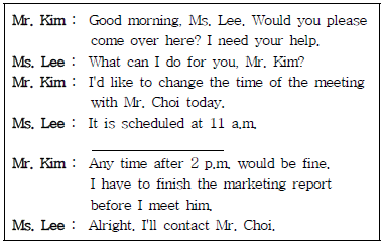
- What time will you be available?
- Will you change the time yourself?
- When do you expect you are able to meet him?
- What time suits you best?
(정답률: 49%)
39. 다음 중에서 영어 철자가 틀린 것은?
- phone directory
- extension number
- long-distance call
- colect call
(정답률: 77%)
3과목: 사무정보관리
40. 다음 중 우편물의 성격이 가장 다른 것은?
- 본사에서 지사장에게 온 협조문
- 고객이 지사장에게 보낸 주문서
- 협력업체에서 지사장에게 보낸 단가변동 안내문
- 지사장명의 신용카드 명세서
(정답률: 71%)
41. 차비서는 새로 이사한 빌딩의 사무환경 조성을 위해 노력하고 있다. 차비서의 행동 중 가장 적절하지 못한 것은?
- VDT 증후군을 예방하기 위해 모니터를 너무 오래 사용하지 않는다.
- 기계를 놓은 책상 바로 밑에는 음의 공명작용을 막기 위해 서랍을 설치하지 않는다.
- 일반 응접실, 면회실, 전시실 등은 건물의 최상층 출입구근처에 배치한다.
- 업무의 흐름이 직선이 되도록 고안하고 전체의 길이를 최단으로 하게끔 노력한다.
(정답률: 63%)
42. 다음 중 비서의 보안 및 기밀유지관리를 위한 행동 중 가장 적절하지 못한 것은?
- 김비서는 중요한 서류나 메모의 원본이나 사본을 쓰레기통에 함부로 버리지 않고, 문서세단기를 이용하여 파기한 후 버린다.
- 최비서는 서류 취급 시 회사에서 정한 기밀 등급에 따라 규정대로 유의하여 다룬다.
- 정비서는 중요 문서는 우편으로 전달하고 꼭 복사본을 가지고 있는다.
- 임비서는 보낸 사람이 불분명한 이메일은 열어보지 않는다.
(정답률: 70%)
43. 다음 중 신문 스크랩과 관련된 비서의 행동으로 가장 옳은 것은?
- 이비서는 신문의 이름을 기준으로 스크랩한다.
- 박비서는 기사의 주제를 기준으로 스크랩한다.
- 김비서는 게재란을 기준으로 스크랩한다.
- 안비서는 신문지에 게재된 기사의 크기를 기준으로 스크랩한다.
(정답률: 80%)
44. 음성이나 비디오 데이터를 컴퓨터가 처리할 수 있게 디지털로 바꿔주고, 그 데이터를 컴퓨터 사용자가 알 수 있게 모니터에 본래대로 재생시켜 주는 소프트웨어에 해당하는 것은?
- 코덱
- 디코더
- 와이브로
- 엠펙
(정답률: 65%)
45. 전자우편에 관한 항목으로 성격이 나머지와 가장 다른 것은 무엇인가?
- Forward
- BCC
- MIME
- Filtering
(정답률: 52%)
46. 같은 속성을 가진 소프트웨어로 짝지은 것 중 가장 적절하지 않은 것은?
- 엑셀 - 로터스 - 훈민시트
- 파워포인트 - 프리랜서
- 드림위버 - 나모 - 프론트페이지
- 액세스 - Outlook - dBaseIV
(정답률: 71%)
47. 아래 설명에 해당하는 매체로 가장 적절한 것은?
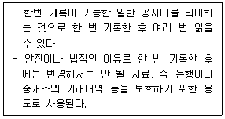
- CD-R
- CD-ROM
- CD-RW
- DVD-ROM
(정답률: 52%)
48. 다음 사무기기 사용 시 유의점에 대한 설명 중 가장 적절하지 못한 것은?
- 복사물 제출 시 백지가 끼어있지 않은지, 페이지가 순서대로 되었는지 확인한다.
- 복사기 사용 후 마지막 장을 복사하고 원본을 두고 나오지 않도록 한다.
- 비밀유지가 필요한 문서는 가급적 팩시밀리로 보내지 않는다.
- 문서세단기는 한 번에 가급적 많은 양의 문서를 세단한다.
(정답률: 80%)
49. 다음 중 회사로 접수된 우편물의 처리에 대한 설명으로 가장 올바르지 않은 것은?
- 외부에서 도착된 우편물은 담당 부서에서 일괄적으로 접수한 후 배부한다.
- 접수된 우편물 중 중요한 문서는 문서 접수 대장에 등록한 후 관련 부서에 신속하게 배부한다.
- 우편물의 정확한 전달을 위해 우편물을 개봉하여 수신자를 확인한 후 해당 수신자에게 전달한다.
- 우편물 배부 시 분실 등의 사고가 발생하지 않게 각별히 주의한다.
(정답률: 62%)
50. 다음 중 전자 문서의 장점을 모두 선택하시오.
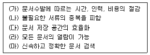
- (가) - (다) - (마)
- (다) - (라)
- (가) - (나) - (다) - (마)
- (나) - (라) - (마)
(정답률: 78%)
51. 인터넷에서 파일, 뉴스그룹과 같이 각종 자원을 표시하기 위한 표준화된 논리 주소를 의미하며, 사용할 프로토콜, 주 컴퓨터의 이름과 주소, 파일이 있는 디렉터리 위치, 파일이름 등으로 구성된 것은?
- WWW(World Wide Web)
- HTML(HyperText Markup Language)
- URL(Uniform Resource Locator)
- HTTP(HyperText Transfer Protocol)
(정답률: 63%)
52. 스크랩과 관련된 설명 중 가장 적절하지 않은 것은?
- 상사의 관심분야인 골프, 와인에 대한 정보를 수집한다.
- 신문, 주간지 등에서 얻은 여러 정보를 모아 일목요연하게 정리한다.
- 스크랩한 내용은 적당한 제목을 붙이고 영구보관한다.
- 내용에 대한 간단한 요약을 적거나 중요부분을 형광펜으로 표시한다.
(정답률: 66%)
53. 다음 중 전자우편 시스템에서 사용하는 프로토콜을 모두 고르시오.
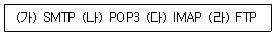
- (가)
- (가), (나)
- (가), (나), (다)
- (가), (나), (다), (라)
(정답률: 49%)
54. 다음 중 사무문서 작성 시 주의해야 할 사항으로 가장 적절하지 않은 것은?
- 충분히 설명한 다음에 결과를 도출하여 쓴다.
- 문장은 가급적 짧고 간결하게 쓴다.
- 수식어를 받는 구절을 빠뜨리지 않는다.
- 가급적 쉽고 이해하기 쉬운 용어를 쓴다.
(정답률: 72%)
55. 다음 그림은 북한어선의 연평도 NLL(북방한계선) 침범상황을 도해화한 것이다. 아래 그림을 가장 잘못 해석한 내용은?
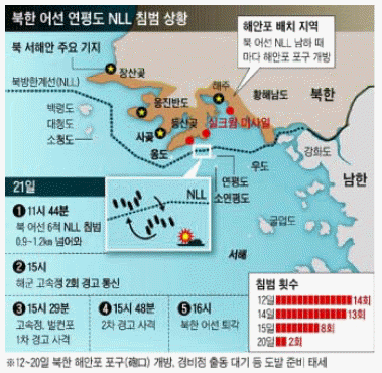
- 북한 어선은 12일 14회 월선(越線)한 것을 시작으로 이후 여러 차례 NLL을 침범했다.
- 12일부터 21일까지 북한의 NLL침범이 4일 동안 있었다.
- 북한 어선이 남하할 때마다 북측 해안포 포구가 열렸다.
- 백령도, 대청도, 소청도는 남한영해에 속한다.
(정답률: 73%)
56. 다음의 그래프는 전주대비 금주의 서울시 주택 전셋값 변동률을 표시한 것이다. 이 그래프에 관한 설명 중 가장 올바르지 않은 것은?
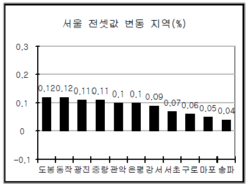
- 이번 주 서울 전세 값은 전주보다 전반적으로 상승했다.
- 도봉, 동작, 광진, 중랑은 전세 값 상승률이 상대적으로 높은 편이다.
- 서울의 전세 값이 거래량 증가 속에 상승세를 보였다.
- 마포, 송파 지역은 상승률이 다른 구보다 낮은 편이다.
(정답률: 57%)
57. 다음 기사에 관한 내용으로 가장 올바르지 않은 것은?
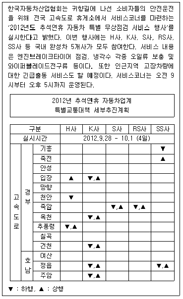
- ▲은 서울방향으로 가는 상행선 휴게소에서 점검함을 의미한다.
- ▼, ▲은 하행과 상행에서 모두 자동차 무상점검을 실시한다는 의미이다.
- S사와 RS사는 경부고속도로에서는 죽암휴게소 1군데에서 실시한다.
- 위 목록의 경부와 호남고속도로 휴게소에서 자동차 무상점검을 실시한다.
(정답률: 55%)
58. 다음 중 우편제도에 대한 설명으로 가장 옳지 않은 것은?
- 규격 우편물과 규격 외 우편물의 요금체계는 상이하다.
- 중량이 동일한 경우의 우편요금은 일반우편 < 보통등기 < 익일특급 순이다.
- 모든 소포는 무게와 거리에 따라 요금이 달라진다.
- 모든 소포는 분실에 대비하여 수·발신 기록을 관리한다.
(정답률: 64%)
59. Office Manager로 일하는 김과장은 새롭게 정비한 사옥의 비서실과 상사집무실의 배치를 기획하고 있다. 가장 옳지 않은 것은?
- 외부손님이 많은 담당자는 사무실 입구에 배치한다.
- 비서의 책상은 입구에서 잘 보이는 위치에 배치한다.
- 컴퓨터 모니터 내용이 외부에서 직접 보이지 않도록 한다.
- 상사의 책상은 입구에서 잘 보이는 쪽에 배치한다.
(정답률: 64%)
이유:
- "○○야"는 존칭이 아니므로 적절하지 않다.
- "동문선배"는 존칭이지만, 사내 회의에서는 직급이나 역할에 따라 호칭을 사용하는 것이 적절하다.
- "부장님의 아들"은 존칭이 아니며, 상황에 따라 적절한 호칭을 사용하는 것이 좋다.
- "여자 과장"은 직급과 성별을 모두 고려한 존칭이다.